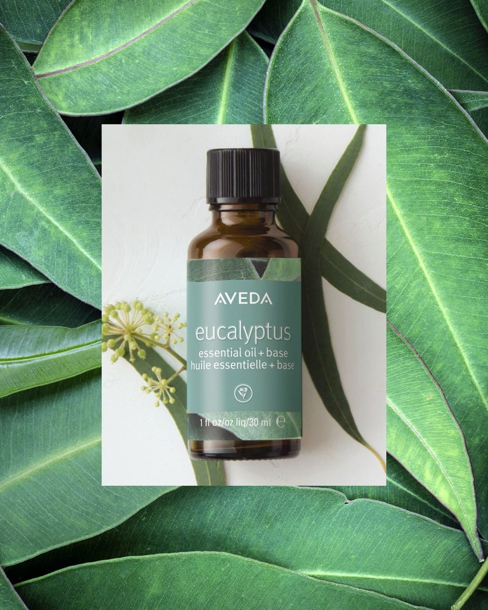

Glad you decided to check out The Essentials. View below some top favorites:

About Essential Oil
Essential oils exhibit elements that have been extracted from plants. Bascially this is what provides that herbal essence you smell. Through a distillation of either water, steam, or a cold press, essential oils are constructed. It's important to know the ingrediants in your oil as well as how it's made since you don't want any chemical creations.
How do you use Essential Oils?
They're commonly inhaled through different methods so that the chemicals connect with your body. The word 'chemical' isn't used in this sentence as something harmful. For example, certain oils you can apply to your skin and the plant chemicals get absorbed. Many people inhale the aromas from essential oils that help stimulate areas of your brain. Ths can help improve emotions, memory, and certain behaviors.
Are you feeling,
anxious
stressed
inflamtion
tired
nervous
If you or others are looking for an alternative, natural way to assess any issues you may relate to above, The Essentials is here to help you find a solution.
Here are some different examples:
Peppermint: used to boost energy and aid digestion.
Lavender: used to relieve stress.
Bergamot: used to reduce stress and improve skin conditions like eczema.
Rose: used to improve mood and reduce anxiety.
Chamomile: used to improve mood and relaxation.
Tea Tree: used to fight infections and boost immunity.